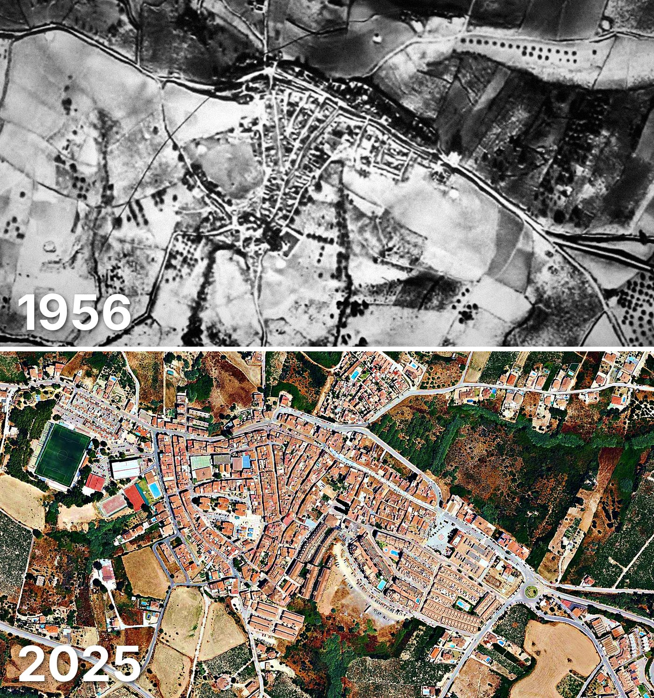

Manilva
Manilva tiene 2.973 edificios y 18.046 viviendas, y 18.165 habitantes en 2025. La mitad de sus edificios es de 1985 o posterior.
Cuándo se construyeron sus edificios
Desde 2015 se han terminado 83 edificios.

Las calles de Manilva con más viviendas
- Calle la Noria · 687 viviendas
- Avenida de España · 567 viviendas
- Avenida de la Paz · 533 viviendas
- Avenida Sierra Morena · 446 viviendas
- Camino del Peñoncillo · 432 viviendas
- Calle Duquesa de Arcos · 311 viviendas
- Arrabal Martagina · 257 viviendas
- Calle de los Fenicios · 257 viviendas
Toda la información de Manilva en CASAS.ES →
Fotos de Manilva para publicar
Estas fotos aéreas de Manilva, de 1956 y de 2025, se pueden publicar gratis en un periódico, un blog, la web del ayuntamiento o las redes, citando la fuente como se indica debajo.

Descargar: las dos juntas · 1956 · 2025 (JPG, 1.400 px de ancho)


Texto listo para publicar
Manilva desde el aire: así era en 1956 y así es en 2025
Las dos fotos muestran el mismo encuadre de Manilva con 69 años de diferencia: arriba, el Vuelo Americano de 1956; abajo, la foto aérea del PNOA de julio de 2025. Hoy Manilva tiene 2.973 edificios y 18.046 viviendas, y 18.165 habitantes en 2025. La mitad de sus edificios es de 1985 o posterior. El 21 % de sus edificios se ha levantado desde el año 2000.
Más datos de Manilva en CASAS.ES: casas.es/malaga/manilva
Cita para copiar
Fotos: Vuelo Americano Serie B (1956-57) y PNOA 2025, cedidos por © Instituto Geográfico Nacional (CC BY 4.0, scne.es). Datos y composición: <a href="https://casas.es/malaga/manilva/">los datos de Manilva en CASAS.ES</a>Descarga: municipios (CSV) · calles (CSV) · Wikidata (Q913492) · cómo usarlos en Python (dev.to) · también en OSF, Figshare, B2SHARE y Mendeley Data